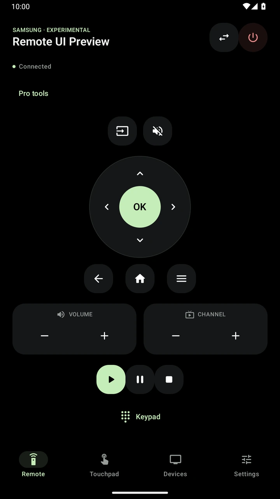

Find & pair
Discover compatible TVs nearby or add a TV by IP. Follow your TV’s pairing prompts to connect.
ANDROID APP · WI-FI TV CONTROL
Less searching for the remote. More enjoying your TV. Connect your phone and compatible smart TV to the same Wi-Fi and keep your everyday controls close.
Coming to Galaxy Store

EVERYDAY TV CONTROL
Start with the controls you use most. The app shows the functions supported by your connected TV.
Discover compatible TVs nearby or add a TV by IP. Follow your TV’s pairing prompts to connect.
Direction arrows and OK, with Home, Back and Menu when your TV supports them.
Adjust volume, change channels and use playback controls from your phone.
20 interface languages, including English, Arabic, French, Spanish, German and Portuguese.
TAKE A CLOSER LOOK
From setup to your everyday controls.
App interface previews. The remote demonstration uses a simulator; compatibility and controls vary by TV. Premium tools and themes require Pro.
PRO MAKE IT YOUR REMOTE
Remote Pro brings more personal controls, premium themes and an ad-free experience.
Pro access requires a verified purchase when offered in Galaxy Store. One-time, monthly and yearly options depend on availability. Subscriptions renew until canceled.
Combine supported actions into a sequence you start in the app. Keep the app open while it runs.
Build a button layout around the commands supported by your connected TV.
Open your selected control in the app, then confirm before sending it to your TV.
CONNECT WITH CONFIDENCE
Use the same Wi-Fi network on your phone and TV. TV model, firmware, network settings and pairing permissions determine what works.
Cast and UPnP provide media controls. Roku and Fire TV system control are unavailable. This app is independent of TV manufacturers.
A FEW USEFUL ANSWERS
Compatibility depends on your TV model, firmware and exposed network services. Some integrations are experimental. The available buttons adapt to your TV’s supported controls.
Yes. Connect both devices to the same local network, enable network control on the TV when needed and approve the pairing request. Guest networks or device isolation can prevent discovery.
Basic remote controls remain free when supported by your TV. Pro is required for saving and running scenes, custom layouts, home-screen widgets, premium themes and removing ads.
The Galaxy Store release is being prepared. The download link will be added here when the app is available. For release or compatibility questions, contact support.
WE’RE HERE TO HELP
Tell us your TV model, Android version and what happens when you try to connect or use a button.
Please leave out passwords, pairing PINs and payment details.